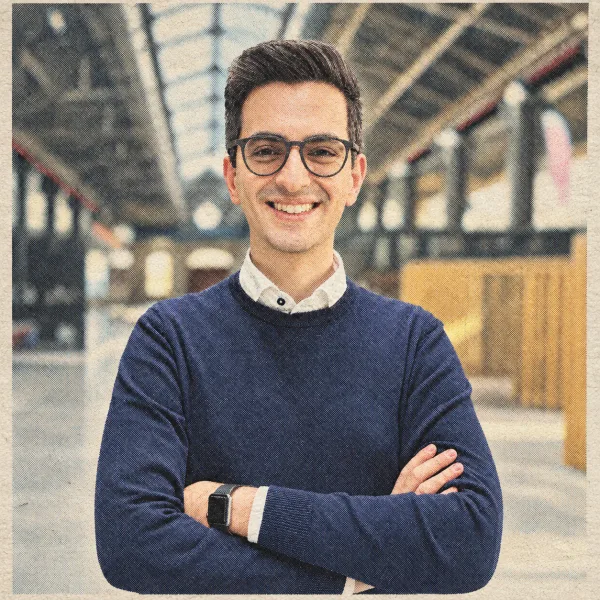

Started my visiting at the University of Technology Nuremberg (UTN) under the supervision of Prof. Yuki Asano.
About me

I am a PhD candidate in the Italian National PhD Program in Artificial Intelligence at Politecnico di Torino, in the VANDAL lab, in collaboration with the startup FocoosAI, supervised by Prof. Giuseppe Averta, Prof. Carlo Masone and Dr. Fabio Cermelli. I am part of the ELLIS PhD Program. My research focuses on visual understanding: image segmentation, efficient deep learning, and adapting models to new visual concepts with limited supervision. Since April 2026 I am visiting the Fundamental AI Lab (FunAI Lab) at the University of Technology Nuremberg (UTN), working with Prof. Yuki M. Asano on spatial understanding in streaming videos. Before starting my PhD, I earned an MSc in Data Science & Engineering from Politecnico di Torino and a BSc in Computer Engineering from the University of Pisa.
Latest news
Attended the FOMO 2026 Winter School.
“PrAda: Few-Shot Visual Adaptation for Text-Prompted Segmentation” accepted to CVPR 2026 (Findings).
Attended the ICVSS 2025 Summer School.
“SAMWISE: Infusing Wisdom in SAM2 for Text-Driven Video Segmentation” and “Show or Tell? A Benchmark to Evaluate Visual and Textual Prompts in Semantic Segmentation” accepted to CVPR 2025 (main conference and Workshops).
“PEM: Prototype-based Efficient MaskFormer for Image Segmentation”, “The Revenge of BiSeNet: Efficient Multi-Task Image Segmentation” and “What Does CLIP Know About Peeling a Banana?” accepted to CVPR 2024 (main and workshops).
Started the PhD at Politecnico di Torino and FocoosAI, supervised by Prof. Giuseppe Averta, Prof. Carlo Masone and Fabio Cermelli.
Publications
PrAda: Few-Shot Visual Adaptation for Text-Prompted Segmentation
G. Rosi, F. Cermelli, C. Masone, B. Caputo
CVPR 2026 · Findings
Show or Tell? A Benchmark to Evaluate Visual and Textual Prompts in Semantic Segmentation
G. Rosi, F. Cermelli
CVPR 2025 · Workshops
SAMWISE: Infusing Wisdom in SAM2 for Text-Driven Video Segmentation
C. Cuttano, G. Trivigno, G. Rosi, C. Masone, G. Averta
CVPR 2025
PEM: Prototype-based Efficient MaskFormer for Image Segmentation
N. Cavagnero*, G. Rosi*, C. Cuttano, et al.
CVPR 2024
The Revenge of BiSeNet: Efficient Multi-Task Image Segmentation
G. Rosi, C. Cuttano, N. Cavagnero, G. Averta, F. Cermelli
CVPR 2024 · Workshops
What Does CLIP Know About Peeling a Banana?
C. Cuttano, G. Rosi, G. Trivigno, G. Averta
CVPR 2024 · Workshops